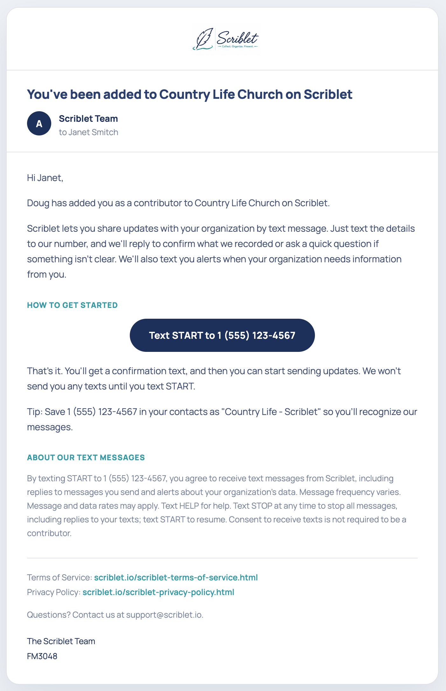

Contributors use text messaging to send updates to their organization's data in Scriblet, and to receive replies and alerts from Scriblet. All texts are written and sent by Scriblet from Scriblet-owned phone numbers.
Only contributors who have been added by their organization's administrator can text with Scriblet. Texts from anyone else are not processed.
Scriblet assigns each organization its own Scriblet number so we know which organization your texts are for. When your administrator adds you as a contributor, Scriblet emails you that number. The number is not published, and organizations are not permitted to share it publicly.
Text START to the Scriblet number in your welcome email. Scriblet won't text you until you do.
By texting START to your Scriblet number, you agree to receive text messages from Scriblet, including replies to messages you send and alerts about your organization's data. Message frequency varies. Message and data rates may apply. Text HELP for help. Text STOP at any time to stop all messages from Scriblet, including replies; text START to resume. Your mobile information will not be sold or shared with third parties for marketing or promotional purposes.
Once you're subscribed, you can text updates to Scriblet in your own words. You don't need to use special commands or follow a specific format.
For example:
"The opening hymn is Great Is Thy Faithfulness, number 100."
or:
"The board meeting is Thursday at 7 PM in the fellowship hall."
Scriblet replies to confirm what it recorded or to ask a clarifying question if something isn't clear. Scriblet may also text you alerts when your organization's data needs information from you.
Reply STOP at any time to stop all messages from Scriblet, including replies to messages you send. Reply START to resume.
Reply HELP for assistance.
When an administrator adds you as a contributor, Scriblet emails you a welcome message like this one, showing the Scriblet number assigned to your organization:

Contact support@scriblet.io.
Scriblet is operated by FM3048 LLC.